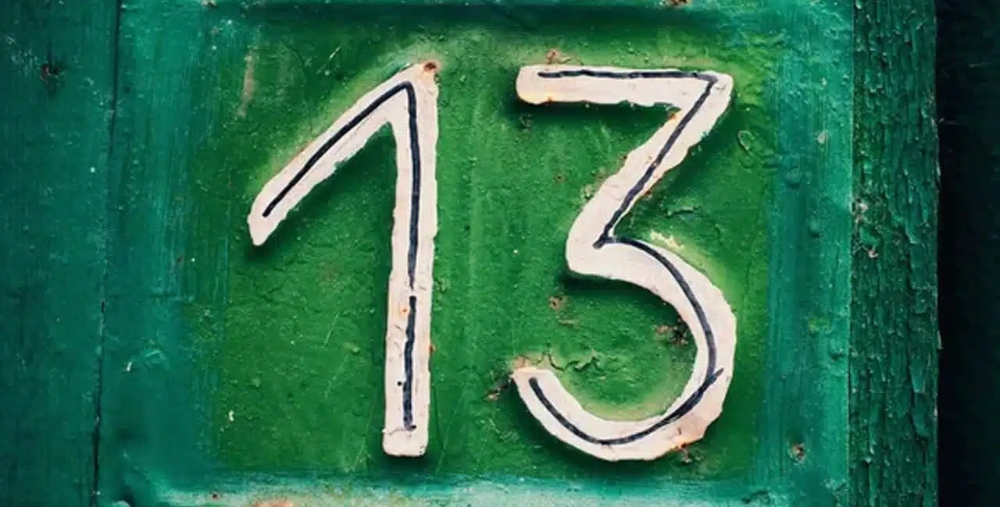

This page is a guide to learning the piece Lucky 13 on a tapping Instrument such as the Chapman Stick or the acoustic Dragonfly DFA.
This piece strikes me as a small interlude or intro type of piece. Changing the key or modulating it partway through might be useful given that notion
There is a ♪ score/tablature ♪ to help you learn the song.